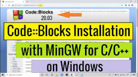
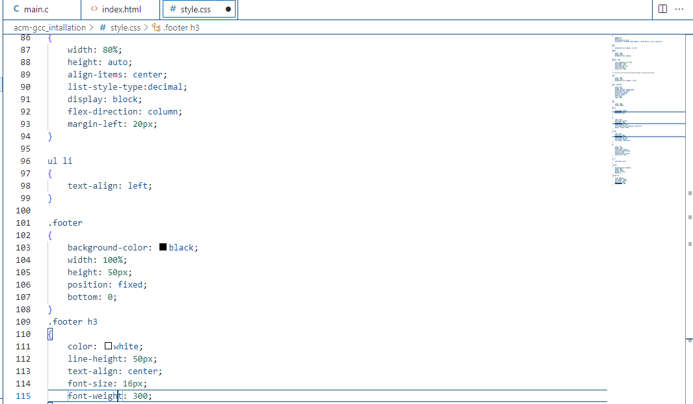
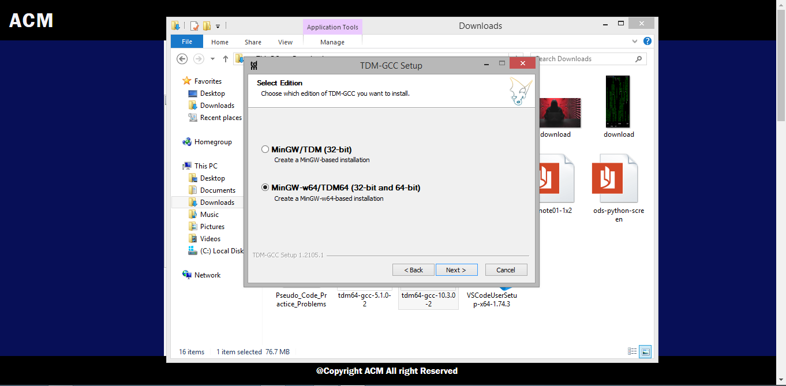
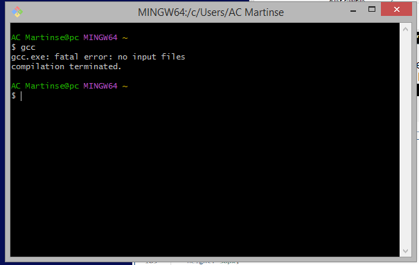

Download and Installation of gcc and Gnu compiler
Hello am AC Martins
Thanks for visiting this page, I really appriciate it.
To download and install a compiler for your C and C++ program, I advice you go to the offical
Mingw site or download Code::Block editor which also comes with
an inbuilt GCC and GNU compiller. To download C and C++ GCC/GNU compiler click on the link
below.
Download and install Mingw GCC/GNU compiler
Download and install Code::Block editor with an inbuild C/C++ compiler

Are you finding it difficult installing the C/C++ compiler in your PC this Article is for you
First do you fall in any of the below questions, if yes the problem solution below is exactly for you
- I have downloaded and installed Code::Block but the compiler is not working
- I downloaded Mingw C compiler but it always came up with an Error of longpath during Installation
- E.T.C

Let get to the solution immedietly. The solution we are talking about is the TDM-GCC_10.3.0 compiler.
The first step is for you to click on TDN-GCC_10.3.0 compiler to download the Installation
software. Please select regarding on the operating system you are using.
Once the file has coompletely downloaded, click on it to open.
You are going to se an image related to the one below.

Then you have to select one amoge the option giving to you, but do to you are still installing the TDN-GCC software
newly, then you have to select the first one (Create), which means that your computer have to create a path for the compiler.
Next you are going to see a related image like the one below, then the decission is now left for you
to select depending on the byte (64bit/34bit) of your PC window. Then click the next button for the Installation to commence.

Waw your compiler has successfully installed , then you can run the program below, to confirm if the
compiler has been installed.
GCC 'click enter'

Subscribe to our news news letter for more help like this.